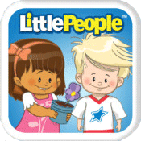
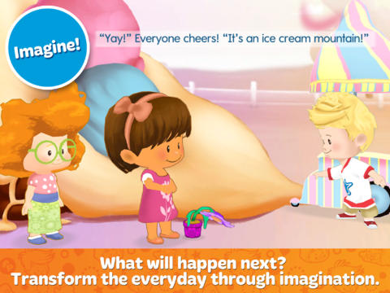
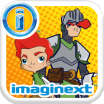
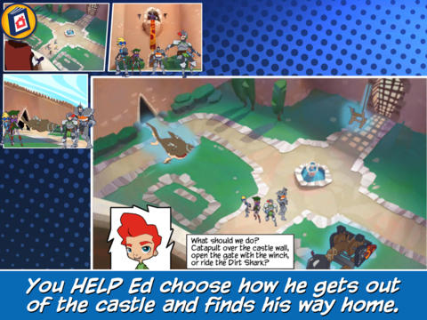

Fisher-Price
Creating the Apps
The two Fisher-Price® mobile apps Tall Chair worked on, Little People™: Flower Power & Imaginext™ Adventures: Through the Crystal Eye, were both being developed at the same time. That is how they had such close release dates. During both projects I played a supportive role to both, along with a few team members.
The art and animations themselves for these apps were done by other members of the team. Each app got its own group assigned to it for optimization purposes. This got more stream-lined by the experiences of doing the Disney • Pixar apps.
At the time I was working on the Active Reader tool as a User Experience Designer / Programmer. If there were bugs in the program that blocked the artists I helped fix those bugs. I also worked as a technical artist doing any more complex tasks in the tool itself, if needed. I consulted the artists with techniques I had picked up on earlier projects, which were more experimental.
The following are in chronological order of release starting with the earliest...
Little People™: Flower Power

Mia® is going to her first day of preschool at Little People Place™. She’s feeling a little shy, but the Little People® friends help her feel at home. Eddie™ shows her around the room with a zoom-zoom-zoom. Super-silly Koby makes her smile. Tessa gets Mia twirling. Sofie shows Mia the class flower. But the flower is sad—and the friends want to make it happy. It’s time to come to the rug with their teacher and start a discovery adventure that will make EVERYONE happy!


What Makes This App Special
This was the first interactive book Tall Chair worked on with fully animated 3D models. They have a toon shader on them and are rendered at real time, since we are using the Unity3D game engine as our tool's platform base.
Imaginext™ Adventures: Through the Crystal Eye

Ed and his friends go on a class field trip to a museum where they encounter a really cool sword! It contains the “Crystal Eye” which is said to be a hero trainer… When Ed sneaks under a rope to get a picture, the sword breaks and the “Crystal Eye” ends up in his phone! It takes Ed and his friends on adventures straight out of Ed’s Imagination where they face a lesson that must be learned!


What Makes This App Special
This app used some of the coolest animations I have seen from Tall Chair. The interactivity in this app is also very creative and make it feel a bit more like a game at times.
Things to Note
Both apps:
- have a 'read to me' version with full voice acting that allows you to follow along with the story
- have a 'read it myself' version that allows the parent to read to their children like a storybook
- allow the user to make decisions during the story for more interactivity
- has animation for every panel like previous Tall Chair productions
- work on iOS 5.1.1 devices like iPad 1 as well as newer devices